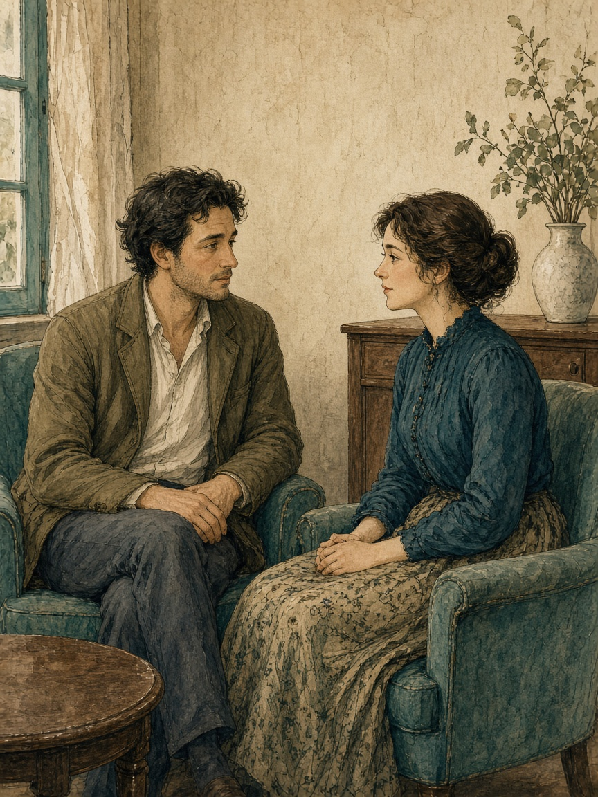

Part 03 · Closeness
The Science and Experience of Closeness
Sit face to face. Look toward each other's eyes and stay with your own sensation.
The standard is four minutes inside about fifteen. Ending early completes the session.
Skip this if anyone has been drinking, or if it is a dare. Stop for dizziness, panic, or a wish to get out. A long look is not consent to touch or sex.
Passing finishes the session. Without gaze, attend to your own hands or to sound. You do not have to take hold.